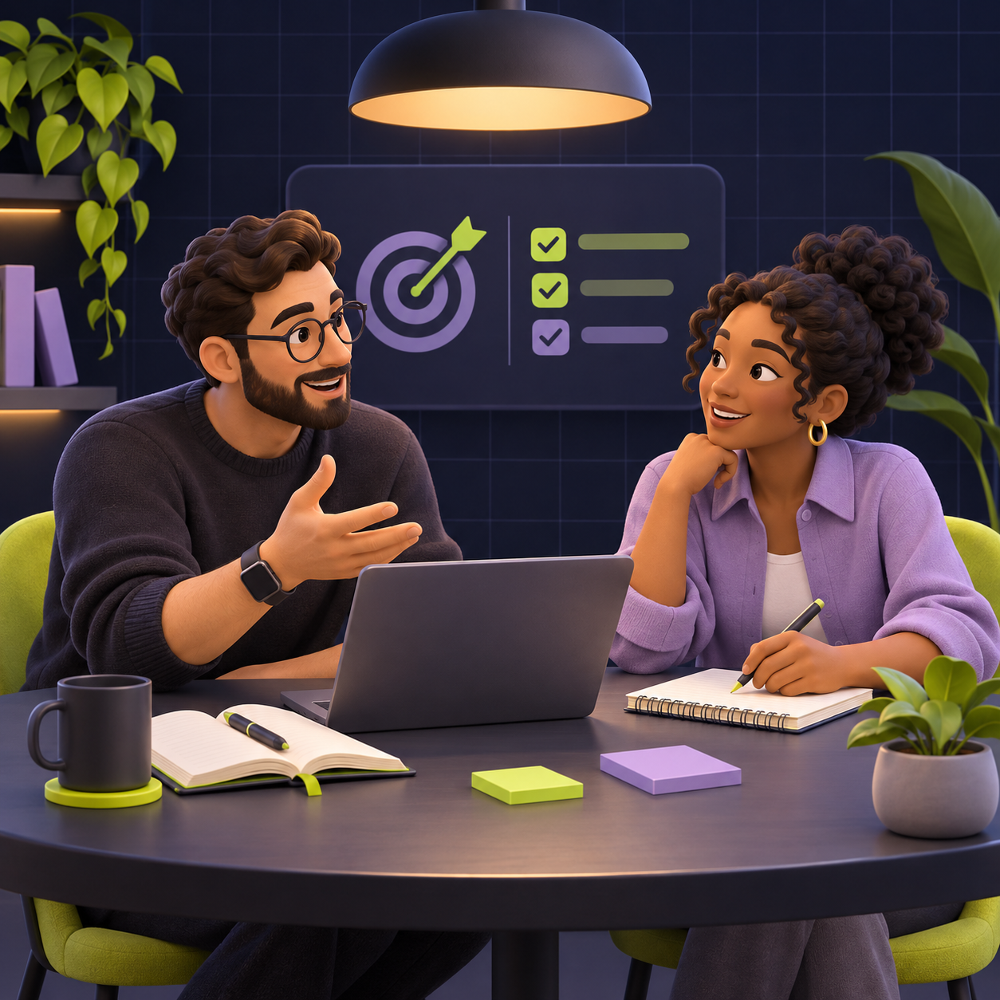
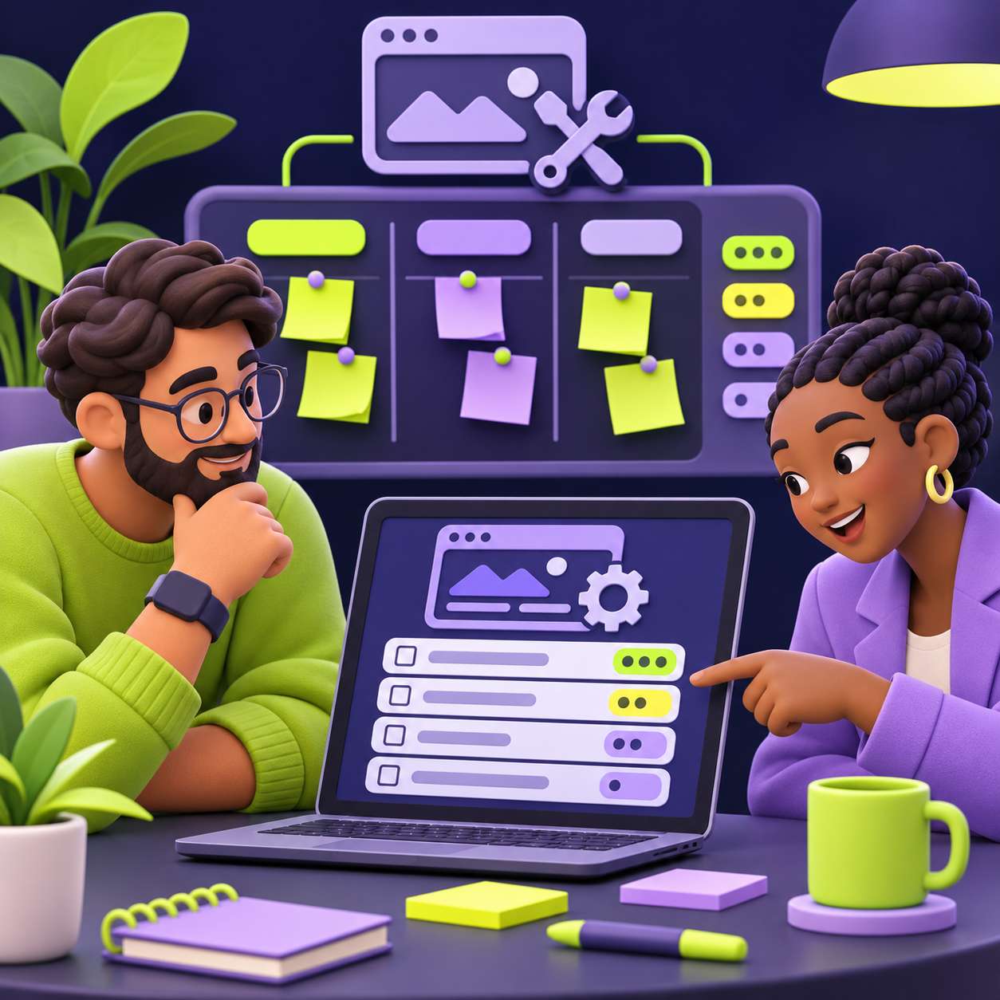
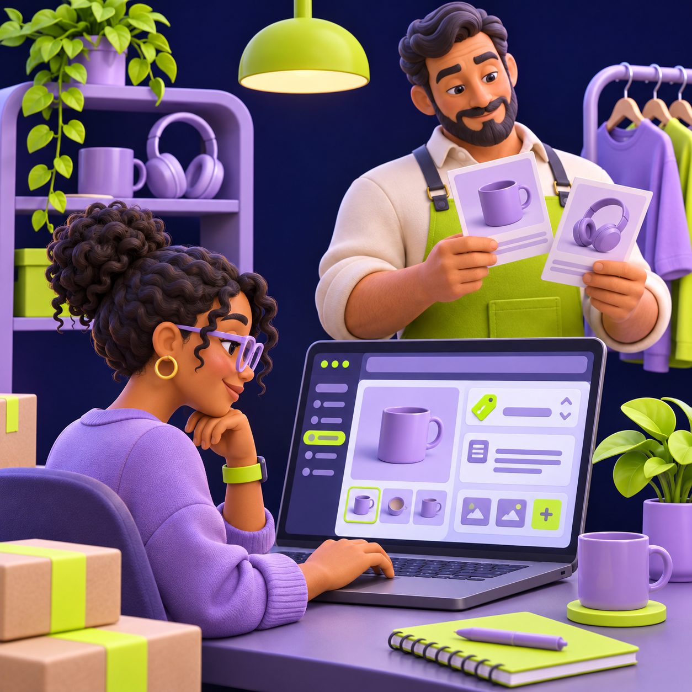
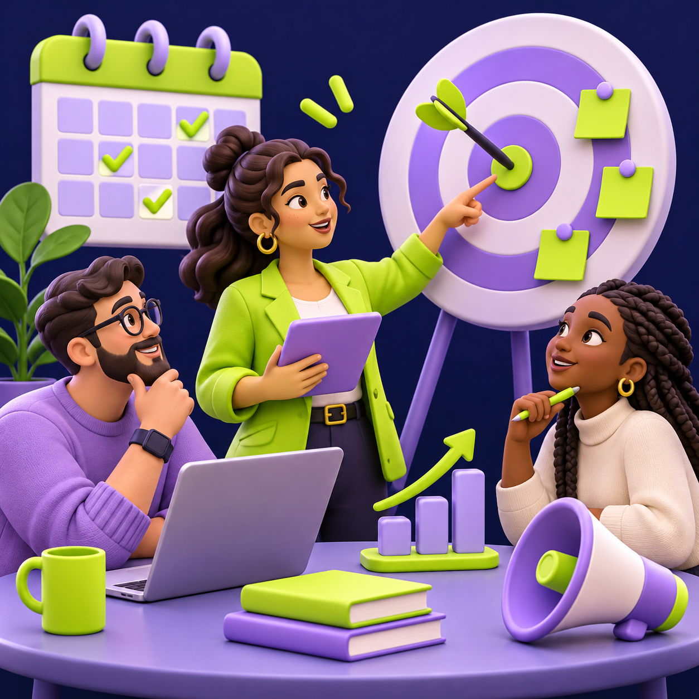
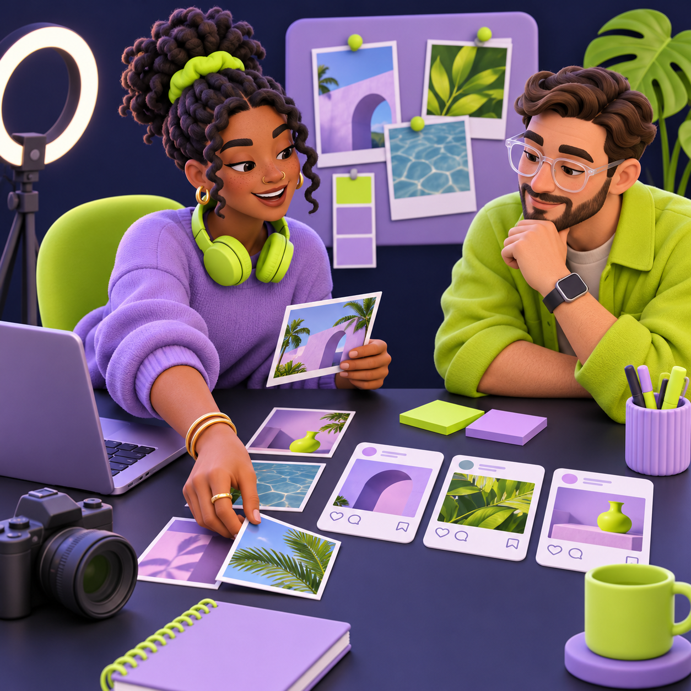
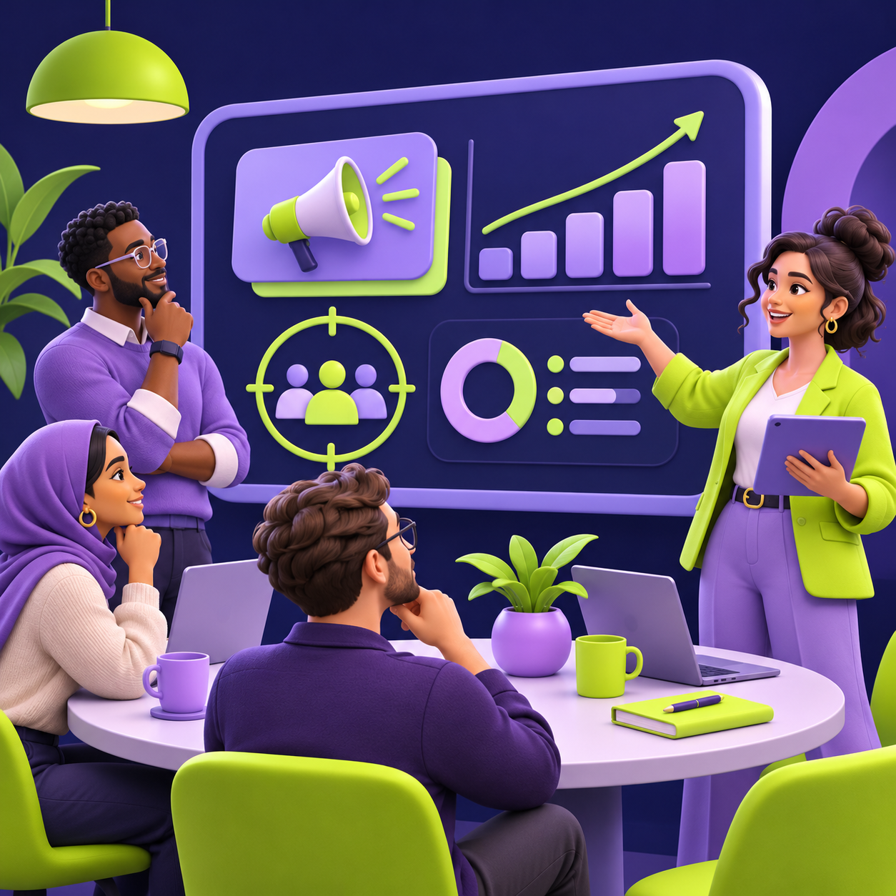

Elegí un recorrido
Cómo podemos ayudarte
Cada servicio se organiza en cinco pasos simples para avanzar con objetivos y prioridades claras.

Nos reunimos
Conocemos tu negocio, tus objetivos y las funciones que necesitás.
Diseñamos
Definimos la estructura, el estilo visual y el recorrido en cada pantalla.
Desarrollamos
Construimos una web rápida, adaptable y preparada para crecer.
Revisamos
Te mostramos el avance, probamos todo y aplicamos los ajustes acordados.
Publicamos
Dejamos el sitio online y listo para continuar con un plan mensual.

Priorizamos
En reuniones semanales o quincenales ordenamos cambios y mejoras.

Actualizamos
Renovamos productos, precios, imágenes, textos y promociones.
Mejoramos
Sumamos funciones y optimizamos la experiencia según tu plan.
Protegemos
Hacemos respaldos y revisamos accesos, seguridad y compatibilidad.
Acompañamos
Probamos cada cambio y atendemos tus consultas por WhatsApp o correo.

Planificamos
Definimos qué querés comunicar, a quién y con qué objetivo.

Preparamos
Adaptamos las fotos, promociones y datos que nos compartís.
Publicamos
Organizamos y difundimos contenido en Instagram y Facebook.

Impulsamos
Configuramos anuncios en Meta para llevar personas a tu web o WhatsApp.
Ajustamos
Seguimos las campañas y aplicamos mejoras en cada nueva etapa.